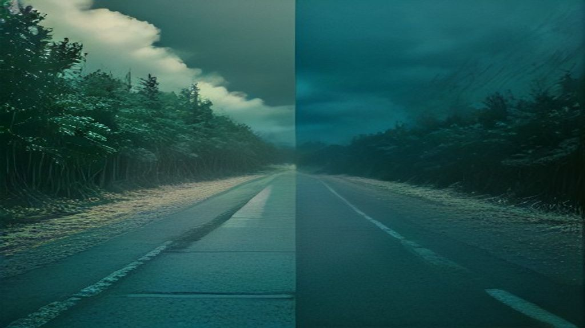

<template>
<div id="sec1" data-composition-id="sec1" data-start="0" data-duration="8"
     data-width="1920" data-height="1080"
     style="position:relative;width:1920px;height:1080px;overflow:hidden;background:#000;">
<style>
@import url('https://fonts.googleapis.com/css2?family=Inter:wght@200;300;400;700;800;900&display=block');
@import url('https://fonts.googleapis.com/css2?family=JetBrains+Mono:wght@400;700&display=block');
#sec1{font-family:Inter,sans-serif;}
#sec1-bg{position:absolute;inset:0;width:100%;height:100%;object-fit:cover;filter:brightness(0.22);}
#sec1-ov{position:absolute;inset:0;background:linear-gradient(135deg,rgba(0,0,0,0.85) 0%,rgba(0,0,0,0.3) 100%);}
#sec1-accent{position:absolute;left:0;top:0;bottom:0;width:6px;background:linear-gradient(to bottom,transparent,#ef4444,#ef4444,transparent);}
#sec1-tag{position:absolute;top:60px;left:80px;font-size:14px;letter-spacing:0.4em;color:rgba(255,255,255,0.3);text-transform:uppercase;will-change:opacity;}
#sec1-left{position:absolute;left:80px;top:50%;transform:translateY(-50%);}
#sec1-line1{font-size:80px;font-weight:200;color:rgba(255,255,255,0.45);letter-spacing:-2px;line-height:1;will-change:opacity,transform;}
#sec1-line2{font-size:120px;font-weight:900;color:#fff;letter-spacing:-4px;line-height:0.9;text-shadow:0 0 80px rgba(239,68,68,0.5);will-change:opacity,transform;}
#sec1-line3{font-size:80px;font-weight:200;color:rgba(255,255,255,0.45);letter-spacing:-2px;line-height:1;will-change:opacity,transform;}
#sec1-divider{position:absolute;left:0;right:0;top:50%;height:1px;background:rgba(255,255,255,0.06);}
#sec1-terminal{position:absolute;right:80px;top:50%;transform:translateY(-50%);width:560px;background:rgba(8,10,18,0.9);border:1px solid rgba(239,68,68,0.3);border-radius:20px;padding:28px 32px;}
#sec1-term-hdr{display:flex;align-items:center;gap:8px;margin-bottom:20px;padding-bottom:16px;border-bottom:1px solid rgba(255,255,255,0.06);}
.sec1-dot{width:12px;height:12px;border-radius:50%;}
#sec1-progress{position:absolute;bottom:0;left:0;right:0;height:3px;background:rgba(255,255,255,0.05);}
#sec1-progress-bar{height:100%;background:#ef4444;width:0;will-change:width;}
</style>

<div id="sec1-ov"></div>
<div id="sec1-accent"></div>
<div id="sec1-tag">Philosophy</div>
<div id="sec1-left">
  <div id="sec1-line1">安全性</div>
  <div id="sec1-line2">vs</div>
  <div id="sec1-line3">商業主義</div>
</div>
<div id="sec1-terminal">
  <div id="sec1-term-hdr">
    <div class="sec1-dot" style="background:#ff5f57;"></div>
    <div class="sec1-dot" style="background:#febc2e;margin-left:4px;"></div>
    <div class="sec1-dot" style="background:#28c840;margin-left:4px;"></div>
    <span style="font-family:JetBrains Mono,monospace;font-size:14px;color:rgba(255,255,255,0.2);margin-left:10px;">analysis</span>
  </div>
  <div id="sec1-t0" style="font-family:JetBrains Mono,monospace;font-size:20px;line-height:1.8;opacity:0;color:rgba(255,255,255,0.35);"># 根本的な違い</div>
<div id="sec1-t1" style="font-family:JetBrains Mono,monospace;font-size:20px;line-height:1.8;opacity:0;color:rgba(255,255,255,0.6);">Anthropic: 安全性優先</div>
<div id="sec1-t2" style="font-family:JetBrains Mono,monospace;font-size:20px;line-height:1.8;opacity:0;color:rgba(255,255,255,0.6);">OpenAI: 普及速度優先</div>
<div id="sec1-t3" style="font-family:JetBrains Mono,monospace;font-size:20px;line-height:1.8;opacity:0;color:#ef4444;">→ 全ての戦略の源泉</div>

  <span style="font-family:JetBrains Mono,monospace;font-size:20px;color:#ef4444;animation:sec1blink 0.8s infinite;">█</span>
</div>
<div id="sec1-progress"><div id="sec1-progress-bar"></div></div>
@keyframes sec1blink{0%,100%{opacity:1}50%{opacity:0}}
<script>
(function(){
  CustomEase.create("hf","M0,0 C0.16,1 0.3,1 1,1");
  CustomEase.create("snap","M0,0 C0.6,0 0.4,1 1,1");
  var tl=gsap.timeline({paused:true});
  tl.fromTo("#sec1-bg",{scale:1.04},{scale:1.0,duration:8,ease:"none"},0);
  tl.to("#sec1-progress-bar",{width:"100%",duration:8,ease:"none"},0);
  tl.from("#sec1-tag",{opacity:0,duration:0.4,ease:"hf"},0.1);
  tl.from("#sec1-line1",{opacity:0,x:-30,duration:0.5,ease:"hf"},0.2);
  tl.from("#sec1-line2",{opacity:0,x:-40,duration:0.6,ease:"hf"},0.35);
  tl.from("#sec1-line3",{opacity:0,x:-30,duration:0.5,ease:"hf"},0.5);
  tl.from("#sec1-terminal",{opacity:0,x:30,duration:0.5,ease:"hf"},0.3);
  tl.to("#sec1-t0",{opacity:1,duration:0.1},0.5);
tl.to("#sec1-t1",{opacity:1,duration:0.1},0.7);
tl.to("#sec1-t2",{opacity:1,duration:0.1},0.9);
tl.to("#sec1-t3",{opacity:1,duration:0.1},1.1);

  window.__timelines["sec1"]=tl;
})();
</script>
</div>
</template>